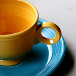

FIESTA® Dinnerware: A Short History
FIESTA® Dinnerware was designed by Frederick Hurten Rhead in 1936 and is now among the most collected china products in the world. As originally designed, the line featured art deco styling and bold, bright colors. The product was discontinued in 1973 and reissued in 1986 with new contemporary colors to mark its 50th anniversary.
FIESTA® Dinnerware’s styling complements a wide range of decors. The fifteen bold colors complement one another as well as a wide range of interior palettes. Over 50 items in the line provide maximum service options and ensure consistent tabletop styling. The plate’s coupe shape allows maximum food plating surface; sculpted concentric rings highlight and frame the food presentation. Alpha Alumina added to the body enhances durability and provides superior heat retention.